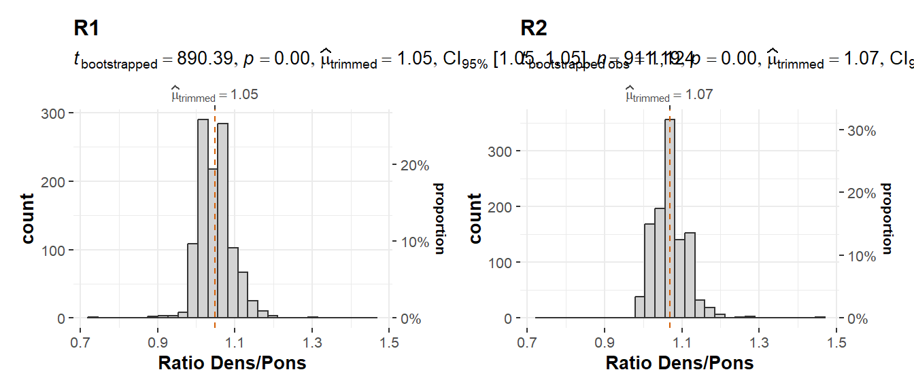
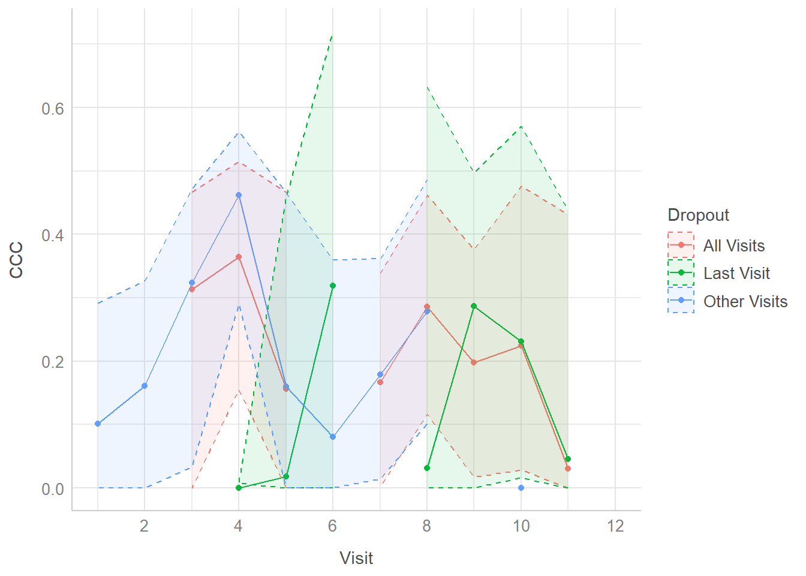

7 Case Study 2
The following dataset offers a longitudinal profile of 139 patients with a drop-out mechanism (the minimum number of visits were 3 and the maximum were 12) for the comparison of two techniques, with the addition of potential covariates whose inclusion or lack there off, and even how they should be included raises interesting methodological questions.
It comes from the study Moreno et al. (2018), where the objective was to evaluate the evolution of possible gadolinium brain deposits in the patients under treatment through two MRI techniques, which have been seen superior in comparison with CT scans for distinguishing between soft tissues and malignancies, and in their lower inter-observer variability1. The first of the MRI techniques is T1 weighted image, which is based in the observation of differences in the T1 relaxation times of tissues after the application of the contrasting agent (which in this case was a gadolinium based contrast agent), while the second is the T2 weighted image, that as its name suggest captures a different pulse sequence on MRI (focusing on the long repetition and echo times), in this case the differences on the T2 relaxation times (which also reacts differently to the contrasting agent)2. While the T1Wi technique was the main technique through which the dentate nucleus identification was done, the T2Wi was used as an automatic check for the correct identification, and in the cases of non-concordance (those cases seen as doubtful) the decision was made by consensus.
The metric of interest in this case study will be the ratio of the weighted image across the dosages (which in the study, in a secondary analysis, was used to study the dentate nucleus visibility). The dataset also contains information of the machines used for each contrast and the practitioner that conducted the evaluation (plus whether the dentate nucleus was considered visible or not). While it would also be interesting to study the as methods the machine or the practitioner effect, both metrics lack the full design in comparison with the MRI techniques, which were both applied in every patient in every visit.
7.1 Results
First, a comment on the methods implementation and observed issues when computing the Concordance Correlation Coefficient. On their current implementation in the cccrm package, both the parametric bootstrap implementation from the ccc_vc function and the U-statistics estimate implemented in the cccUst function, showed problems handling missing observations. The issue for the parametric bootstrap case can be solved with dropping the missing observations and working with the available cases, while for the case of the U-statistics estimate, its implementation works under the assumption of equal number of observations per subject, and thus it requires a deeper review. Thus, I reflected the estimates for three levels of complete cases: those that went through at least 6 visits (106 patients), those that reached the 9th visit (72 patients), and those that reached the penultimate visit (only 17 patients). While the presence of a drop-out mechanism in the response variable should not by itself suggest any issue with the Concordance Correlation Coefficient estimate, in the degree that the non-observed samples (MNAR) or the omitted individuals (MAR) had shown a differential degree of concordance between T1Wi and TW2i, the Linear Mixed Models assumptions may not hold, and as it was used to provide the coefficients estimates these might also not hold.
When reviewing the results, beyond the limitation of the U-statistics implementation, first is noticeable how the MAP estimate3 falls lower than the estimates provided by the other methods, while showing comparable (but larger) bounds for the coefficient. This is also can be noticed in the estimate of the standard error provided, which is clearly larger for the Bayesian and the non-parametric bootstrap estimates, while the asymptotic method and the parametric bootstrap remain more consistent.
| CCC | LL CI 95% | UL CI 95% | SE CCC | |
|---|---|---|---|---|
| Asymptotic | 0.1942 | 0.1226 | 0.2658 | 0.03651 |
| Asymptotic (Fisher’s Z) | 0.1942 | 0.1294 | 0.2722 | 0.03651 |
| Asymptotic (Z, m=2) | 0.1989 | 0.1257 | 0.27 | 0.03686 |
| Asymptotic (KG transf) | 0.1942 | 0.1313 | 0.2749 | 0.03651 |
| Param Boot BCa (AC) | 0.1942 | 0.1155 | 0.2616 | 0.03815 |
| Param Boot Emp (AC) | 0.1942 | 0.1273 | 0.2727 | 0.0375 |
| Non-Param Boot BCa | 0.1942 | 0.08988 | 0.2657 | 0.04436 |
| Non-Param Boot Emp | 0.1942 | 0.1228 | 0.2937 | 0.04542 |
| U-stat (AC) | NA | NA | NA | NA |
| U-stat (CC-6) | 0.2364 | 0.01214 | 0.4381 | 0.1102 |
| U-stat (CC-9) | 0.2581 | 0.04362 | 0.4498 | 0.105 |
| U-stat (CC-11) | 0.1488 | -0.01856 | 0.308 | 0.08404 |
| N-N Bayesian (MAP) | 0.1308 | 0.09267 | 0.3339 | 0.0727 |
The inclusion of the two possible covariates, the practitioner and the machine used in the evaluation, while for all methods reduce the CCC point estimate, their inclusion as fixed effects do not dramatically shift the coefficient’s confidence intervals. Given the experiment design it is up to discussion whether the standard inclusion of covariates as fixed effects was appropriate, or whether they should have been modeled as random effects.
| CCC | LL CI 95% | UL CI 95% | SE CCC | |
|---|---|---|---|---|
| Asymptotic | 0.1767 | 0.1033 | 0.2501 | 0.03744 |
| Asymptotic (Fisher’s Z) | 0.1767 | 0.1112 | 0.2577 | 0.03744 |
| Asymptotic (Z, m=2) | 0.1841 | 0.1086 | 0.2575 | 0.03803 |
| Asymptotic (KG transf) | 0.1767 | 0.1129 | 0.2604 | 0.03744 |
| Param Boot BCa (AC) | 0.1767 | 0.09655 | 0.2493 | 0.03923 |
| Param Boot Emp (AC) | 0.1767 | 0.1072 | 0.2557 | 0.03852 |
| Non-Param Boot BCa | 0.1767 | 0.06093 | 0.2507 | 0.04985 |
| Non-Param Boot Emp | 0.1767 | 0.1031 | 0.279 | 0.04679 |
| N-N Bayesian (MAP) | 0.1058 | 0.05965 | 0.3079 | 0.07206 |
7.2 Missingness pattern
It felt rather important to review, for the adequacy of the application of the Complete Case Analysis for the concordance whether the dropout pattern in the dataset had any relationship with the degree of concordance between pairs, as if the observed pairs excluded in the complete case analysis presented a different degree of concordance (significantly more or less concordant) than the remaining pairs, we would be under a Missing At Random pattern, and the complete cases estimate would be biased. In order to review it, and with the awareness that the concordance was also time dependent, a comparison between the concordance of the pairs which were at the last visit of the subject versus the rest of the pairs was done for each visiting time. Then, the separation between the 95% confidence intervals at each time was assessed, with the only meaningful difference in Concordance happening at the fourth visit (where the nine subjects that dropped out had highly discordant samples). There was also no significant difference in concordance at each time when comparing the concordance of all available pairs versus the subset of pairs of continuing subjects, which would indicate that for this particular dataset the limitation of a Complete Case Analysis for the concordance correlation coefficient will not come from the missingness mechanism of the present dropout, but on the selection of the cut-off visit. To produce comparable estimates for methods that require complete cases to those under an Available Case framework, imputation strategies should be reviewed.
| Visit | Missing | Last_Visit | CCC | CCC_LV | CCC_Other |
|---|---|---|---|---|---|
| 1 | 0 | 0 | 0.1016 | - | 0.1016 |
| 2 | 0 | 0 | - | - | 0.1605 |
| 3 | 0 | 2 | 0.3137 | - | 0.3237 |
| 4 | 2 | 9 | 0.3643 | 2.892e-10 | 0.4622 |
| 5 | 11 | 14 | 0.1558 | 0.01786 | 0.1605 |
| 6 | 25 | 13 | - | 0.3189 | 0.08091 |
| 7 | 38 | 7 | 0.1666 | - | 0.1785 |
| 8 | 45 | 17 | 0.2859 | 0.031 | 0.2784 |
| 9 | 62 | 31 | 0.1975 | 0.2869 | - |
| 10 | 93 | 27 | 0.2245 | 0.2311 | 7.853e-09 |
| 11 | 120 | 15 | 0.03061 | 0.04555 | - |
| 12 | 135 | 4 | - | - | - |
| sig_ccc |
|---|
| - |
| - |
| - |
| Signficantly Less Concordant |
| No significant differences |
| No significant differences |
| - |
| No significant differences |
| - |
| No significant differences |
| - |
| - |
